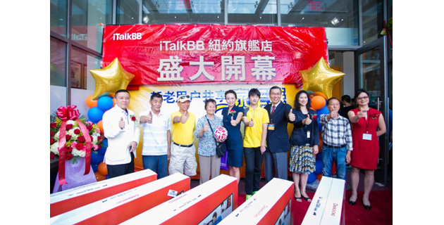
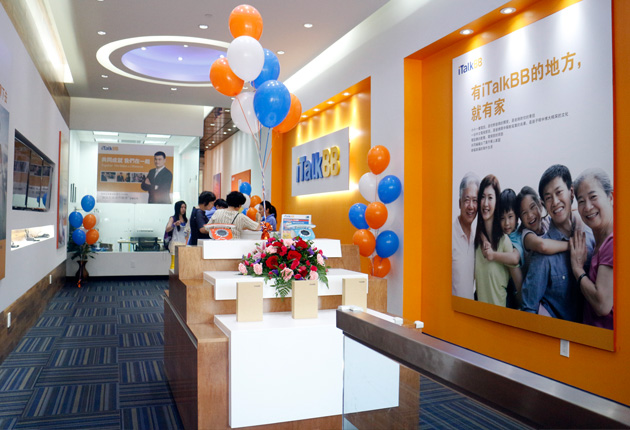

iTalkBB第29家門店 – 法拉盛旗艦店盛大開幕 十台50寸電視大派送 嗨翻全場
點擊圖片看大圖
點擊圖片看大圖
紐約消費者以超低價格便可享有最優質全球通訊與最豐富華語娛樂
弗吉尼亞維也納（ 2014年7月18日訊）
今天，法拉盛的才竣工不久的Arcadia Mall前人頭攢動，分外熙攘。iTalkBB最新一家旗艦店正式盛大開幕。公司領導層、紐約地區政要、商界領導、眾多媒體嘉賓悉數到場慶賀，與從各處趕來一探究竟的iTalkBB新老用戶和華人消費者一齊見證了這個重要的時刻。
圖為活動當天iTalkBB旗艦店門口聚集的民眾
活動於18日上午11點半準時開始。熱鬧的舞獅表演、隆重的剪綵儀式，主辦方為到訪的賓客一一送上了精美的禮品和可口的餐點，讓到場民眾大呼過癮，交口稱讚。國會議員Grace Meng、紐約州參議員Toby Stavisky、法拉盛華人工商促進會理事長Liu Tee Shu女士、世界日報處長劉其筠先生等紛紛致辭慶賀。鳳凰衛視、TVB、美國中文電視、世界日報、星島日報、多元文化廣播集團等知名媒體也都前來採訪記錄了這一盛會。
圖為國會議員Grace Meng與iTalkBB副總裁Victoria Lei在iTalkBB旗艦店內的合影
圖為紐約州參議員Toby Stavisky與iTalkBB副總裁Victoria Lei在iTalkBB旗艦店內的合影
圖為剪綵儀式
從左至右依次為：新星周刊主編Emily Wang, Verizon區域總監Doreen Boyd, 美國中文電視副台長Janis Lam,紐約華裔小姐選美會主席Jason Kong,法拉盛華人工商促進會理事長Liu Tee Shu, 國會議員Grace Meng, iTalkBB副總裁Victoria Lei,紐約州參議員Toby Stavisky, 紐約市議員Peter Koo, 中國銀行皇后分行行長任文軍, 北美世界日報總管理處大陸事務處處長Marco Liu, 多元文化廣播集團AM1380節目總監李曉櫻, AM1480台長Sunny Chan,昌發超市集團總經理姜約梅, 法拉盛商業改進區聯合主席Timothy Chuang
活動當天，最吸睛的要數iTalkBB在現場舉行的別開生面的“擊鼓傳花”活動。主辦方組織到場來賓和民眾排成隊列，隨着鼓聲和音樂傳起花球，花球停到誰的手中，誰即可獲得50寸LED高清電視一台。共有10位消費者成了最終的幸運兒。家住紐約法拉盛附近的Mark Huang先生在接到花球時，喜出望外，激動不已，他表示自己已是iTalkBB好多年的老用戶，既用着電話也用着電視，還推薦了身邊許多朋友都用了，這下有了新的LED電視機，用來看iTalkBB的高清中文電視是再好不過的。“最可貴的是他們一直以來對用戶實實在在的關心”黃先生動情地說，“這是許多商家都遠遠做不到的”。
圖為“擊鼓傳花”遊戲獲獎者合影
圖為在抽獎中喜獲50寸高清電視的得獎者
法拉盛旗艦店是iTalkBB的第29家店，也是在紐約地區的第4家。店內不僅提供市場上電話、中文電視、網絡服務相關的最新信息，還為新老客戶們送上各種便民的服務。所有進店消費者，都可以免費試用iTalkBB電話，觀看iTalkBB中文電視，明白它為什麼能完全取代並超越您現在使用的通訊服務，也可以進來歇歇腳，聊聊天，了解了解市面上最新的省錢信息。
“iTalkBB的企業宗旨便是為海外華人提供更美好的生活” iTalkBB的副總裁Victoria Lei女士指出，“在海外立足、置業、安家是一個逐步實現夢想的過程。iTalkBB希望能在這個夢想的每個階段都陪伴華人朋友們，為他們送上最合適的、經濟的、方便的電信產品。”她欣然表示，希望iTalkBB 法拉盛旗艦店能為每一位需要的華人送上最貼心的服務，讓大家在這裡找到“家”的感覺。
圖為開幕盛典舞獅表演
幾乎每六個在美華人，就有一個做了這個明智的決定，使用 iTalkBB來代替他們原先的傳統電話服務，並開始享受iTalkBB為華人朋友量身定製的各種會員優惠服務，如iTalkBB高清中文電視，及iTalkBB手機國際通話、智能手機App等。使用iTalkBB不用更換話機，也可以保留他們的電話號碼。同時也享有由 iTalkBB獨家提供的中國號碼功能，以及香港、台灣、和韓國號碼等，讓消費者在那些國家的親友撥打一個當地的電話就可以接通到用戶在美國的話機，並不須支付任何的國際電話費。
新店開業期間，iTalkBB特為全美用戶送上網絡+電話+電視的各種超級組合優惠。
更多信息請至法拉盛旗艦店了解。地址：紐約法拉盛緬街4235號Unit 1E，東王朝飯店旁
電話：718-888-0068。你也可以訪問iTalkBB官方網站www.iTalkBB.com，或撥打24小時服務熱線1-877-482-5522了解詳情。
附：50寸LED電視獲獎者名單：
圖為iTalkBB旗艦店內景